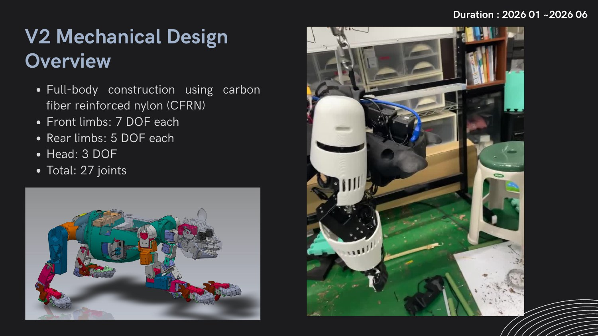
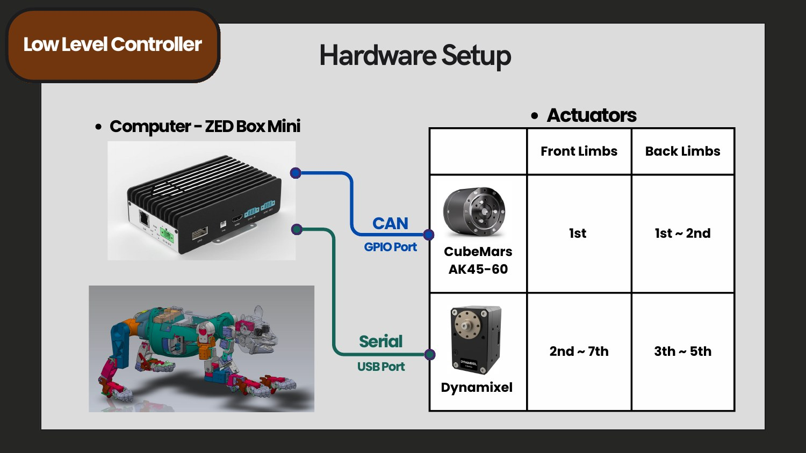
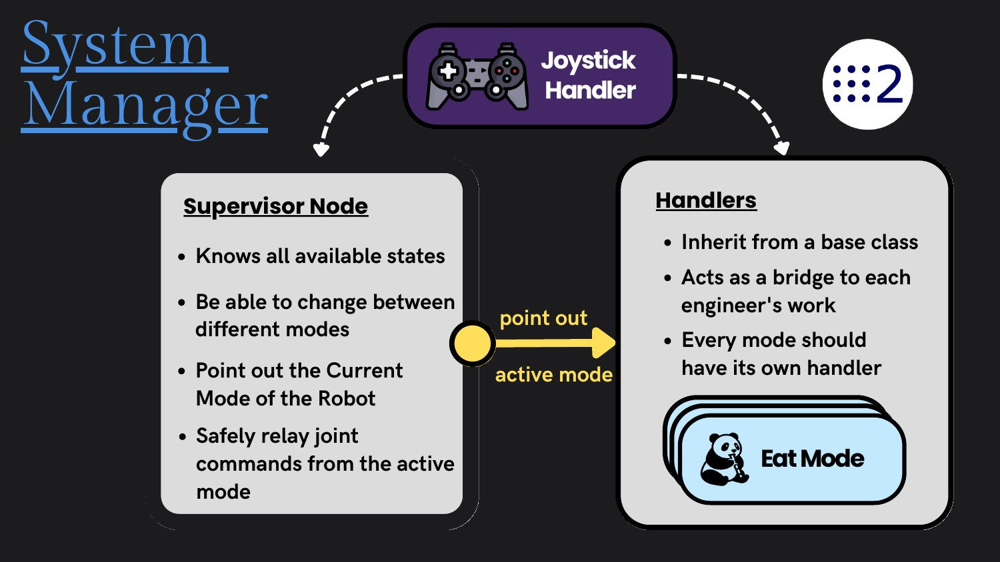
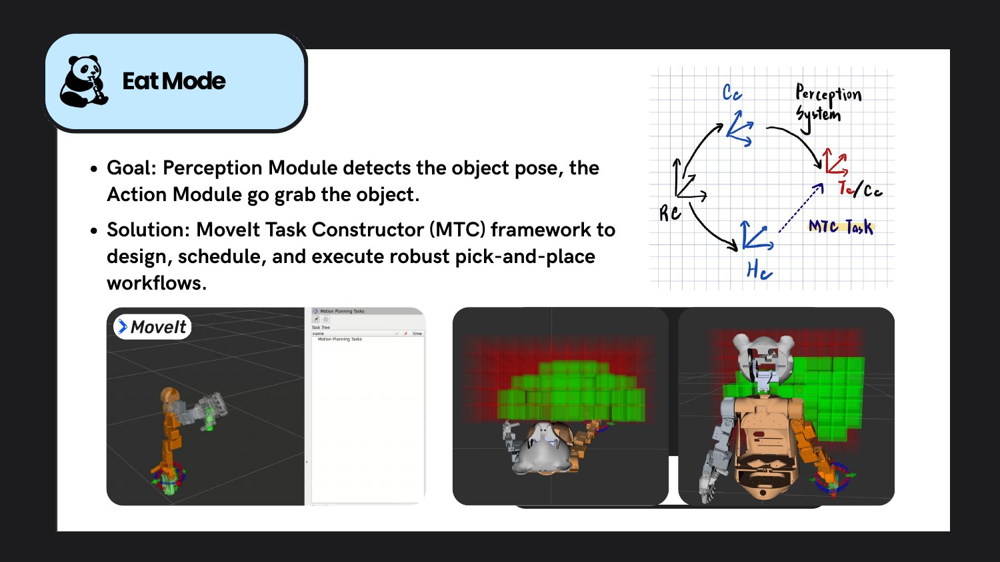
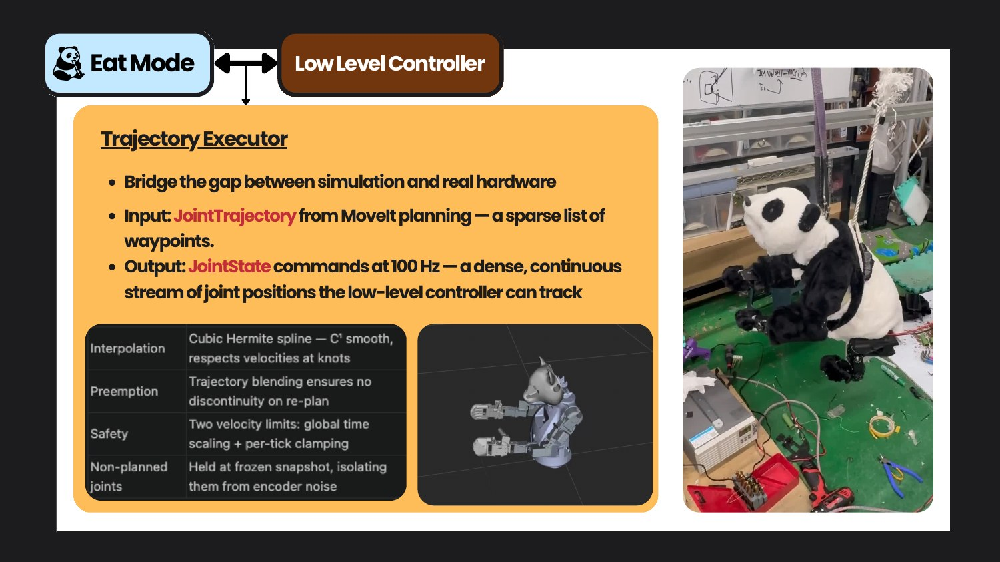
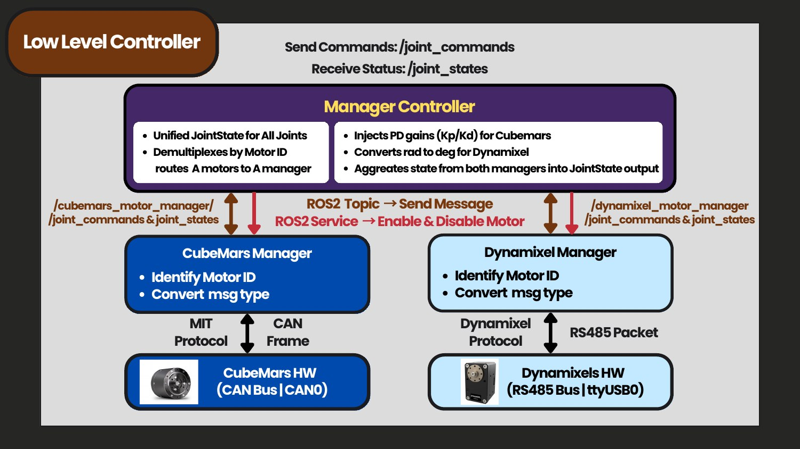

Control and Motion Planning
I developed core control and behavior-execution components for a custom 27-DoF panda-inspired robot. My work connected heterogeneous actuators, ROS 2 system management, collision-aware motion planning, and real-time trajectory execution into a unified framework for autonomous feeding behaviors.
My Contributions
System Manager
Built a ROS 2 supervisor-and-handler architecture that safely switches robot modes and routes commands from the active behavior.
Low-Level Control
Unified CubeMars and Dynamixel actuators behind common joint-state and joint-command interfaces across CAN bus and RS-485.
Feeding Motion
Designed a collision-aware feeding workflow with MoveIt Task Constructor and a 100 Hz trajectory executor for physical deployment.
27-DoF Hardware and Control Architecture
The second-generation robot combines seven-DoF front limbs, five-DoF rear limbs, and a three-DoF head. The controller coordinates CubeMars AK45-60 actuators over CAN and Dynamixel actuators over serial communication while presenting a unified ROS 2 interface to higher-level behaviors.


ROS 2 System Manager
I implemented a supervisory state-management layer that knows all available robot modes, identifies the active mode, and safely relays joint commands. Each behavior is encapsulated in a handler derived from a shared base interface, allowing new modes to be integrated without coupling them to actuator-specific code.

Collision-Aware Feeding Behavior
The feeding pipeline receives an object pose from perception and uses MoveIt Task Constructor to plan and schedule a robust sequence of approach, grasp, transport, and feeding motions. This separates task logic from low-level execution and enables collision checking throughout the workflow.

Real-Time Trajectory Execution
MoveIt produces sparse JointTrajectory waypoints, while the physical robot requires dense, continuous joint commands. I implemented a 100 Hz trajectory executor using cubic Hermite interpolation, velocity-aware timing, preemption support, and safety limits to bridge planning and hardware control.

